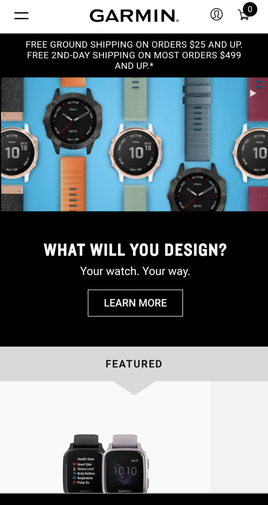
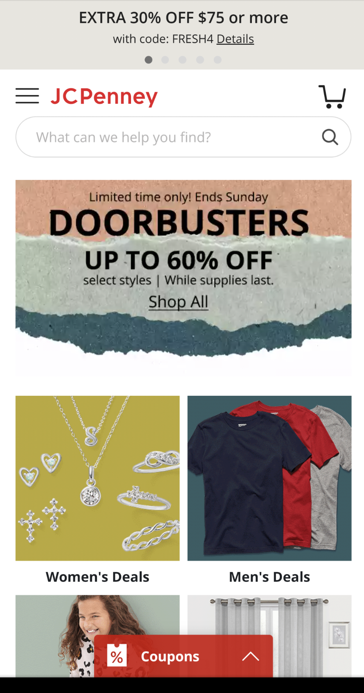

Repitition
Garmin Website
https://www.garmin.com/en-US/your-watch-your-way/
It is clear through the repitition of watch faces that Garmin has good control of repitition without making the browser feel overcrowded or boring.
Visual Hierarchy
JC Penny
JC Penney's does a good job at visual hierarchy, the first thing that you notice when looking at the website is that there are doorbusters at up to 60% off. As your eyes continue to view the screen you see men's and women's clothing as it switches between photos (this draws you attention to it since it is not static). Then finally you notice at the top the JEPenney logo with the coupon code.
Contrast
Sparrow & Co
I blieve that Sparrow & Co does an amazing job with their contrast where it is important. All the very important parts are white on a very dark background or dark on a white background. There is a litte yellow wording that is not tow hard to see when it is on your phone but in the picture here looks more like a design which is not a bad thing either.